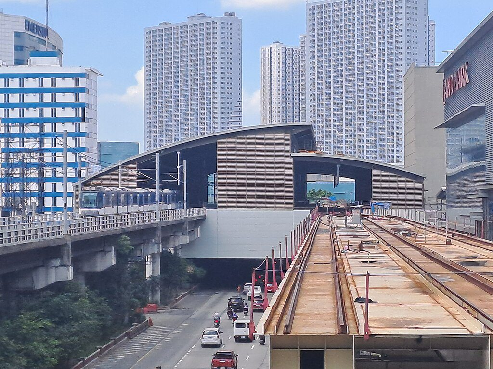
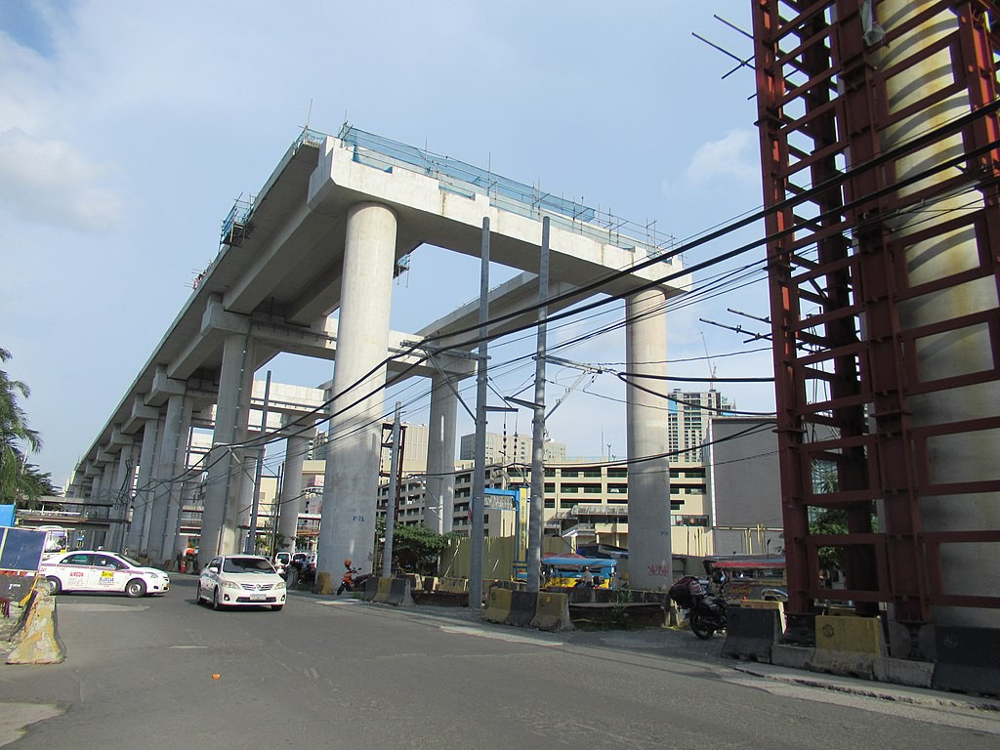
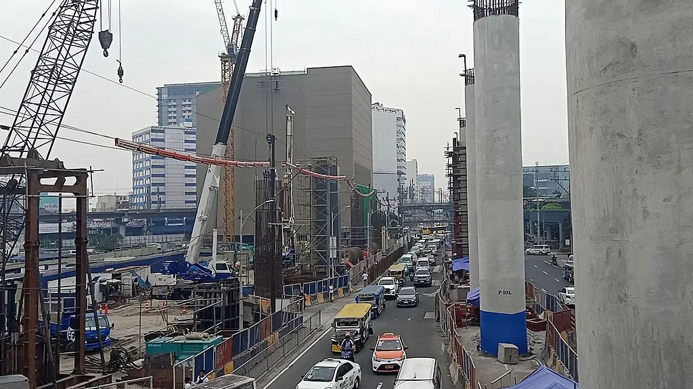

North Triangle Common Station
Common station
The North Triangle Common Station (official designation: Grand Central Station), vommonly known as the Common Station or North EDSA station, is an under-construction rapid transit terminal and transport hub that will connect LRT Line 1, MRT Line 3, and MRT Line 7, and the nearby Metro Manila Subway. It is located in Bagong Pag-asa, Quezon City, Philippines, and is named after its location, which is at the corner of EDSA and North Avenue.
The common alignment had been in limbo for years since the Department of Transportation (DOTr), reviewed the project's technical and financial components. It was in January 2017 that an agreement was reached to build the station. The groundbreaking of the station was held at the North Triangle Transport Terminal in September 2017. The station was initially expected to fully open in January 2021, but repeated delays have set back its opening to indefinitely.
| North Triangle Common Station | ||||||||||||||||
|---|---|---|---|---|---|---|---|---|---|---|---|---|---|---|---|---|
|

The construction progress of Area A in October 2023
|
||||||||||||||||
| General information | ||||||||||||||||
| Other names |
|
|||||||||||||||
| Location |
|
|||||||||||||||
| Owned by |
|
|||||||||||||||
| Operated by |
|
|||||||||||||||
| Line(s) |
|
|||||||||||||||
| Platforms | Side and island platforms | |||||||||||||||
| Tracks |
7
|
|||||||||||||||
| Connections | Future: MMS North Avenue | |||||||||||||||
| Construction | ||||||||||||||||
| Structure type | Elevated | |||||||||||||||
| Parking |
|
|||||||||||||||
| Bicycle facilities | Yes | |||||||||||||||
| Accessible |
Concourse: All entrances
Platforms: All platforms |
|||||||||||||||
| Other information | ||||||||||||||||
| Status | Under construction | |||||||||||||||
| Station code |
|
|||||||||||||||
| History | ||||||||||||||||
| Opening | 2028 (estimated) | |||||||||||||||
| Previous names | Metro Manila Integrated Rail Terminal | |||||||||||||||
| Passengers | ||||||||||||||||
| 478,000 (projected) | ||||||||||||||||
| Services | ||||||||||||||||
|
||||||||||||||||
The common alignment had been in limbo for years since the Department of Transportation (DOTr), reviewed the project's technical and financial components. It was in January 2017 that an agreement was reached to build the station. The groundbreaking of the station was held at the North Triangle Transport Terminal in September 2017. The station was initially expected to fully open in January 2021, but repeated delays have set back its opening to indefinitely.
Negotiations
On June 2, 2011, the Department of Transportation called for bidders for the contract to build the station, which was estimated to cost ₱1.5 billion. But on July 13 of that year, then-Secretary of Transportation and Communications Mar Roxas announced a review of the project and considering adding store space for lease. The government, by that time, had allotted ₱2 billion for its construction.On July 22, 2012, the government shelved the project indefinitely due to the Philippine financial crisis in favor of demolition of the tracks and pillars. Secretary Roxas said that the station was being studied by engineers because the MRT-3's original plans did not include the station, and that problems with the line's timing system may arise. He included that in the event that the station does not go through, the ₱200 million paid by SM Prime Holdings, Inc., the operator of SM City North EDSA and other SM Malls, to the Light Rail Transit Authority for naming rights may have to be returned.
However, at the start of 2013, Roxas' successor, Joseph Emilio Abaya announced that the government has cancelled and abandoned the project indefinitely because the construction of the common station was supposed to be completed back in May 2010 during the presidency of Gloria Macapagal Arroyo but disputes over cost, engineering issues and naming rights caused due to the halting of the project by Arroyo's successor President Benigno Aquino III on January 2, 2013.
On January 9, 2013, Abaya announced that the government has filed for the candidacies for three sites of the common station linking three rapid transit systems for Metro Manila, DOTC is not keen on build the common station in front of the Annex Building of the SM City North EDSA shopping mall, adding that other potential locations are the TriNoma mall and the Malvar LRT station in Caloocan. Abaya said the agency is awaiting the results of a study that would determine the final location of the common station. He had said the original design near SM City North EDSA Annex was "ineffective and costly" because the rails of Line 3 would have to be extended and trains would have to be added.
On November 21, 2013, the NEDA board, chaired by President Benigno Aquino III, approved the construction of a common station within North Avenue between SM City North EDSA and TriNoma, estimated to cost ₱1.4 billion. The station was set to feature head-to-head platforms for LRT 1 and MRT 3 trains with a 147.4 m elevated walkalator to MRT 7, inconsistent with the original plan of having seamless connectivity to Monumento and is also an unusual arrangement of having two train stations beside each other. Secretary Abaya said that SM would be able to keep the naming rights for the station, even if it is transferred near rival Ayala's TriNoma mall. This led to the change of the station's location, which was initially set to be near SM City North EDSA, earning the ire of the group of the country's largest mall operator SM Prime Holdings Inc., which paid an initial ₱200 million for the naming rights of the station.
Transportation officials have repeatedly said building the station near TriNoma is both economically and environmentally viable, as this would result in a lower cost and less urban blight.
SM Prime then brought its battle to the Supreme Court, which issued a stay order against the DOTC and the Light Rail Transit Authority (LRTA) in June 2014, enjoining them to stop the transfer of the common alignment's location.
Agreement
At a business forum held on August 12, 2016, Department of Transportation Secretary Arthur Tugade said that all stakeholders namely Metro Pacific Corporation, SMC-Mass Rail Transit 7 Inc. of San Miguel Corporation, SM Prime Holdings, and Ayala Corporation had agreed in principle that the common station will be built in North Avenue between the Southeast end of SM North EDSA and North side of the TriNoma Mall. Negotiations took about 8 years for the station to be built near SM North EDSA and TriNoma.A memorandum of agreement was signed by the station's stakeholders on January 18, 2017.
Construction

Area B construction progress in January 2020

Area C construction progress in August 2022
The groundbreaking ceremony of the station was held on September 29, 2017, marking the start of construction. It is planned to be completed in 2023. Three areas were designated for the project with each area with its own developers. Area A which will host a platform and concourse for Lines 1 and 3 will be developed by the Department of Transportation. Area B, which covers two concourses that will connect Areas A and C will be developed by North Triangle Depot Commercial Corporation, an affiliate of Ayala Land. San Miguel Corporation will develop and finance Area C which will host the Line 7 platform. By January 2017, the projected cost for the station is ₱2.8 billion.
The construction of Area A is carried out by BF Corporation and Foresight Development and Surveying Company. The contract for the construction of Area A was signed on February 13, 2019. The Area A involves a spur line branching from Line 1's portion, reusing the previously dug foundations originally intended for the station in front of SM North EDSA for its pier beams. All-steel girders will be used, but construction experts reportedly warned that it would compromise the station's stability.
Delays
The station was originally supposed to open in January 2021, but mainly due to the COVID-19 pandemic, which affected manpower as well as construction logistics delays, the station opening was postponed to June 2023, with full operations expected to begin by January 2025. Issues such as utilities relocation, the aforementioned pandemic-related issues, and systems upgrades (such as signalling & automated fare collection) contributed to repeated completion delays. In April, additional delays have pushed back the opening of the common station to the end of 2023. A delay in payments to the contractor also impacted construction progress, which delayed the opening to January 2024.On March 4, 2025, newly-appointed Transportation Secretary Vince Dizon made a surprise inspection at the station's Area A. The inspection revealed that construction has stalled since August 2024 and most of the construction work was abandoned. The DOTr then studied a possible termination of its contract with BF Corporation and Foresight Development and Surveying Company, the contractor of Area A, and expected that if construction resumed, the common station could be done before 2028. The department formally cancelled the contract on March 6, 2025.
In 2009, SM Prime Holdings which owns SM North EDSA secured naming rights for the station by paying ₱200 million while Ayala which owns TriNoma contributed ₱150 million which also made it eligible for naming rights. In January 2017, it was agreed that naming rights of both SM Prime Holdings and Ayala will be honored and until the two companies agreed upon a name, the station shall be temporarily called as the Unified Grand Central Station.
The station is divided into three primary areas: A, B, and C. Area A hosts a platform and concourse for LRT Line 1 and MRT Line 3. Area B, also called the
Atrium, will connect Areas A and C. Area C hosts a platform and concourse for MRT Line 7. The station for the Metro Manila Subway is a stand-alone structure located near the Veterans Memorial Medical Center.
| Operational | |
|---|---|
|
Dr. Santos
Ninoy Aquino Asia World MIA Redemptorist Baclaran EDSA Libertad Gil Puyat Vito Cruz Quirino Pedro Gil |
United Nations
Central Carriedo Doroteo Jose Bambang Tayuman Blumentritt Abad Santos R. Papa 5th Avenue Monumento Balintawak |
| Fernando Poe Jr. | |
| Under construction | |
|
Las Piñas
Zapote |
North Triangle |